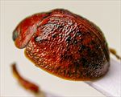
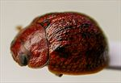
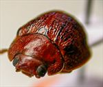
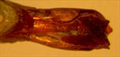
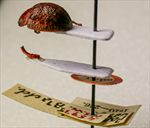
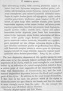

Click on images to enlarge
.jpg){kind=link}

Fig. 1. Paropsis versuta type specimen, lateral view
.jpg){kind=link}

Fig. 2. Paropsis versuta type specimen, oblique view
.jpg){kind=link}

Fig. 3. Paropsis versuta type specimen, anterior view
.jpg){kind=link}

Fig. 4. Paropsis versuta type specimen, aedeagus
.jpg){kind=link}

Fig. 5. Paropsis versuta type specimen, labels
{kind=link}

Fig. 6. Paropsis versuta, description
Name
Paropsis versuta Blackburn, 1897
Corresponds to
Ta45.
Diagnosis and Notes
Blackburn (1897) deals with P. versuta as part of his 'subgroup iv' (i.e., those species without "strongly marked characters", whose greatest height is considerably in front of the middle of the elytral margin). Within that group, he characterises it as:
AA. Prothorax not (or scarcely) explanate at sides;
B. The verrucae unpunctured or nearly so;
C. Elytra not having a sharply defined discal transverse wheal-like ridge;
D. Subhumeral depression present;
EE. Elytral punctures more distinct than the rugulosity of the interstices;
F. elytral margins widely and strongly outsloped.
This is almost certainly Ta45, by comparison with the type, the aedeagus being quite characteristic of this species.
Type specimen
Location: BMNH
Label data: /“Type” (red-bordered circle)/ “4593 N.S.W. T”/ “Blackburn coll. 1910-236.”/ “Paropsis versuta Blackb.”/.
Male; length ~8.1 mm (from Blackburn's description); aedeagus had been dissected out and glued to card; HCE/BL ~ 22.9% (estimated from a lateral view photo)
Original description
Translation of original description (Figure 6) by ChatGPT, 04/2026:
Broadly somewhat ovate (female oval), very convex, the greatest height (seen from the side) placed before the middle of the elytral margin; somewhat shining; reddish-ferruginous; the sternum, elytra, verrucae, and (in some specimens more or less) the antennae, abdomen, and spots on the head, pitchy or blackish; head rather closely and finely punctulate; prothorax wider than long in the ratio 2½ to 1, much widened beyond the middle from the apex, behind the apex transversely impressed, rather closely but not strongly (at the sides coarsely rugulose) punctate, sides fairly arcuate, not flattened, posterior angles absent; scutellum smooth; elytra slightly depressed beneath the humeral callus, behind the base broadly transversely and somewhat lightly impressed, less strongly subseriately (at the sides less closely but somewhat more strongly) punctate, with numerous small verrucae irregularly arranged, interstices fairly rugulose, marginal area fairly broad, obliquely directed outward, well separated from the disc (by a continuous groove, posteriorly fairly deep); humeral callus scarcely more distant from the suture than from the lateral margin; basal ventral segment somewhat closely but not strongly punctate. Length 3⅘ lines [~8.1 mm], width 2⅘ lines [~5.9 mm].References
Blackburn, T. 1897, "Revision of the genus Paropsis. Part II", Proceedings of the Linnean Society of New South Wales, vol. 22, 166-189 (page 172).
Copyright © 2026. All rights reserved.